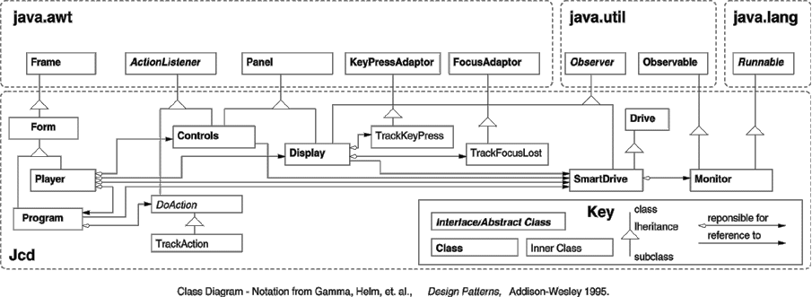

![[ TABLE OF CONTENTS ]](../gx/indexnew.gif)
![[ FRONT PAGE ]](../gx/homenew.gif)


In my previous article I described a simple CD player that can be extended to create a GUI player such as Jcd, a freeware player I've made available on the Web, see http://www.actrix.gen.nz/users/michael/giveaways.html
In this article I will describe how to extend the Drive object so that it can carry out programmed play (play a list of tracks) and shuffle play (play every track once in a random order). The structure of the new player is described by the class diagram in the following figure. Rather than starting with the low level components, I thought it would be more interesting to start with a description of the GUI interface. For the moment just assume that there is a new SmartDrive version of Drive that includes all the old functionality, plus monitoring of the Drive state and the ability to accept and modify a list of tracks to be played. I'll introduce the use of the new functionality as we proceed.

In my previous article I described a Java class, called ``Drive'', that provides the following CD player functionality:
Drive Object: Informational methods: currentTrack, currentIndex, numberOfTracks, currentAddress, cdEndAddress, trackAddress, trackLength Control methods: play, stop, pause, resume, eject, setVolumeIn this article I will describe how to extend the Drive object so that it can carry out programmed play (play a list of tracks) and shuffle play (play every track once in a random order). But rather than start with the low level components, I thought it would be more interesting to start with a description of the GUI interface. For the moment just assume that there is a new SmartDrive version of Drive that includes all the old functionality, plus monitoring of the Drive state and the ability to accept and modify a list of tracks to be played. I'll introduce the use of the new functionality as we proceed.
Since writing my previous article, the Java Development Kit 1.1 has been ported to Linux. This code in this article will use features of the AWT from JDK 1.1. The article was originally written using the JDK 1.0.1, and the original JDK 1.0.1 code is included in the tar available at SSC's Linux Journal ftp site.
The new CD player I'm going to describe is called Player and is run from the command line by entering:
setenv SBPCD 1 # if you have an old SoundBlaster connected drive java Jcd.PlayerRunning the application creates the GUI interface in Figure 1 and Figure 2.
The source code for the Player class is presented in Listing 1. The Player class has a static main() method on line 30, which is where program execution will begin. On line 32 the main() method creates an instance of the player class:
Player player = new Player();On lines 38 to 43, the Player's class constructor sets up the SmartDrive object that communicates with the CD player. The name of the device to open (/dev/cdrom) and the location of the native module (Jcd_Drive.so) is hard coded into the Player's constructor. The native module implements the kernel interface to the CDROM drive. In a real production version of the system, these parameters would be read from a configuration file or deduced by interrogating the operating environment.
As previously stated SmartDrive is an extended version of the hardware interface class described in my first article--it has been enhanced to support programmed play, and to provide notification events concerning the CD players status. On line 56, the Player's constructor starts the SmartDrive's monitor. The monitor will begin delivering CD player events to any object that has registered for them.
The AWT GUI toolkit provides components such as text-labels, text-entry fields, menus, and buttons. Components are placed into containers to build windows and pabels. The AWT's top level component container is the Frame class. A Frame constructs a separate free-standing window. Like other GUI toolkits, the AWT provides the programmer with sub-container classes that can be used to control component placement by subdividing a window into smaller areas. The AWT's major sub-container is the Panel class. The AWT provides further control over placement by allowing the programmer to configure a Frame or Panel's layout policy. For example, the standard AWT FlowLayout just places components left to right, top to bottom. A Frame or Panel's layout can be assigned from the layouts provided by the AWT or you can write your own.
On line 10 of Listing 1, the Player class is declared to extend the Form class. The source code for Form is presented in Listing 2. Form is a class I've created that extends the normal top level AWT Frame class. Player is a Form, a Form is a Frame, a Frame creates a free-standing window, so Player creates a free-standing window. The Form class uses the AWT GridBagLayout manager. The GridBagLayout manager is the AWT's most flexible layout manager. It has a wide variety of options for the spacing, and placement of objects with a Frame or Panel. GridBagLayout's flexibility makes it complex to deal with. Form simplifies dealing with the GridBagLayout by providing an addCenter() method. On lines 23 to 32 of Listing 2, the addCenter() method controls placement by placing the object at the next available row and making it consume the entire row:
c.gridx = 0; ... c.gridwidth = GridBagConstraints.REMAINDER;It sets fill to NONE. It sets the inset space around the component to 1. The end effect is that the Form sub-class will place objects top to button, one object per row, each consuming the space it needs plus a little surrounding space.
Returning to the Player class. On lines 46 and 47 of Listing 1, the Player's constructor sets up the windows menu bar:
setMenuBar(new MenuBar()); getMenuBar().add(createFileMenu());The actual drop-down menu is created by the createFileMenu() method on Lines 70 to 78 of Listing 1. It creates the player's file-menu, and adds individual menu items to it. Lines 76 and 77 of createFileMenu() setup the event handling for the menu:
fileProgramItem.addActionListener(this); fileExitItem.addActionListener(this);These two lines set up the Player object (this) to handle the ActionEvents from the file-menu's fileProgramItem and fileExitItem. These events are generated when the user selects a menu item. In order to be able to handle these events the Player class must implement the ActionListener interface--it is declared as such on Listing 1 line 10:
public class Player extends Form implements ActionListenerWhat's going on here? Player inherits from--``extends''--Form, but what does ``implements ActionLister'' mean? Player can only inherit data and method definitions from a single parent--Java doesn't support multiple inheritance--an object can only ``extend'' one parent class. However, to provide some of the functionality of multiple inheritance, Java provides the ``implements/interface'' mechanism. In other languages multiple inheritance has to deal with the issue of what to do when a class inherits two more implementations of the same data-structure or method from two different parents. For example, say both parents have an add() method, which one should be used in the sub-class? Java's limited multiple inheritance mechanism, the ``interface'', doesn't support the inheritance of implementation. Except for class-wide constants, interface definitions must be completely abstract. An interface definition, such as ActionListener, cannot provide an implementation of any of the methods it declares. Any class wishing to ``implement'' an interface must provide its own code to implement all the methods in the interface. A class can implement any number of interfaces--a class could implement both ActionListener and MouseListener and handle both kinds of events. By not providing an implementation, interfaces leave conflict resolution in the hands of the programmer designing the implementation.
Listener interfaces such as ActionListener, MouseListener, and others, were newly introduced in JDK 1.1. The new JDK 1.1 AWT Event model uses the Java interface mechanism to provide a more flexible event handling mechanism that the earlier version of the JDK. There are separate interfaces for different kinds of events such as the mouse or the keyboard. Multiple objects can register for the same events and they will all receive them.
In order to implement the ActionListener interface, the Player class has to have an actionPerformed() method--the method is defined on on Lines 59 to 68. The Player will be passed menu events via a call to the actionPerformed() method. The actionPerformed() method checks which component was the source of the event and invokes an appropriate code fragment: at lines 62 to 65, the Player's actionPerformed method checks if the source of the event was the fileProgramItem--if it was, and there isn't an existing program showing, a new one is created. At line 66, if the source of the event was fileExitItem the program is terminated.
In some cases the interface necessary to handle an AWT event is quite complex. To save the programmer the work of having to completely define all of an AWT event interface, the AWT includes pre-written Adapter classes that provide default implementations for the more complex event interfaces. For example the MouseListener interface has a corresponding MouseAdapter class that provides a default implementation. These pre-canned AWT Adapter classes can be sub-classed to selectively override any of their methods.
The Player class makes use of an Adapter class to handle close requests from the window manager. Close requests are usually the result of the user double clicking the close button on window's title bar. On line 52 of Listing 1, the Player registers a WindowListener:
addWindowListener(new DoClose());The WindowListener interface has several methods and I only want to override one of them--the windowClosing() method. Unfortunately the Player class can't inherit from the default WindowAdaptor class because the Player class already inherits from the Form class. The solution I've applied in this case is to use another new feature of the JDK 1.1. JDK 1.1 adds Inner Classes to the Java language--this means I can declare a class within a class:
public class Player extends Form implements ActionListener {
...
addWindowListener(new DoClose());
...
private class DoClose extends WindowAdapter {
public void windowClosing(WindowEvent e) {
System.exit(0);
}
}
...
}
The Player uses addWindowListener() to register a new instance of its
own inner DoClose class. Because DoClose is an Inner Class of
Player it has access to Player's data and methods and can therefore be
more closely integrated into Player than a separately declared class.
In other languages it's quite common to solve situations such as this
by passing pointers to methods, functions, or code-fragments--but in
Java only objects can be passed, so Inner Classes were provided as one
solution.
Turning now to the remainder of the Player GUI interface: the Controls and Display classes. I'll describe the Controls class first because it's the simplest. Controls is a panel of buttons which you can see on the bottom of Figure 1. Listing 3 shows the source code for the Controls class. Since it is intended to be a sub-panel of Player it inherits from Panel:
class Controls extends Panel implements ActionListenerThe Controls class also needs to take action when the buttons are pressed, so it also implements the ActionLister interface.
Lines 17 to 22 of Listing 3 declares the set of buttons. The button declarations also specify how to initialize the buttons when a Controls object is created. On lines 26 to 32, the Controls constructor adds each of the buttons to the Panel. The simple GridLayout manager, not to be confused with the more complex GridBagLayout manager, is used to control component placement within the Panel. GridLayout places components left to right, top to bottom, in equal sized cells in the grid specified:
setLayout(new GridLayout(1, 6, 2, 2));In this case the grid is 1 row by 6 columns--a column for each button. The last two arguments specify a horizontal and vertical gap between grid cells of 2.
The Controls add() method, on lines 31 to 34, overrides the add() method inherited from the Panel super-class. Add() behavour has been modified to set the Controls object as the ActionListener for each button:
private void add(Button b) {
b.addActionListener(this);
super.add(b); // Now call super class add() method.
}
The Controls actionPerformed() method, lines 36 to 49, reponds to
button press events by invoking corresponding CdPlayer methods.
The final part of the interface shown in Figure 1 is the Display panel, the source code for which can be seen in Listing 4. The Display panel consists of three text fields to display the CD track, the CD index, and the CD track time remaining--trackField, indexField, and timeField. They're declared on lines 13 to 15 of Listing 4 and will be initialized as new TextFields a Display object is created (which only ever happens once in this application).
The Display() constructor method is on line 20 of Listing 4. Lines 22 to 29 setup the basic components involved in the display. The Panel is assigned the FlowLayout manager which means that calls to the add() method will place the three text fields in a left to right layout butted up to each other with a small amount of separation top and bottom. And on Lines 23 and 24 I've made the indexField and timeField read-only so the user can't alter their values:
indexField.setEditable(false); timeField.setEditable(false);The trackField is left editable so that the user can enter the number of a track to start playing from. In order to handle the trackField's mouse focus events and keyboard events, we have to register a couple of event Listeners:
trackField.addFocusListener(new TrackFocusLost()); trackField.addKeyListener(new TrackKeyPress());Both of the Listeners are quite complex, so rather that write our own complete implementations, two default Adapter classes are sub-classed to handle the task on lines 53 to 74--more about them later.
On line 34 we register Display() as an Observer of the cdPlayer:
cdPlayer.monitor.addObserver(this);The status of the CD player is actually kept track of by a Monitor object--the cdPlayer.monitor object. The monitor runs in its own thread (a thread can be thought of as a light weight sub-process that has shared access to the data of the main task). The need to monitor events and notify other objects is a common programming problem. Java provides the Observable Class, and its companion Observer Interface, as a standard basis for addressing this kind of problem. The monitor object is a sub-class of a Observable class. The Observable class provides the code necessary to manage the Observer/Observable relationship. The monitor class will be described in more detail later. Display is declared to implement Observer, which means it must define an update() method. The update() method will be called when an Observable event takes place. Display's update() method is defined on lines 37 to 51, it is passed the Observable object that caused the event and an extra argument (which isn't used in this application).
Normally the trackField is updated once a second when the monitor broadcasts a status update to its Observers. The user can also alter the value of the trackField by entering a new track which will force the player to skip to it immediately. To prevent the one second update from clobbering the users input, the update() method is careful not to update the trackField text unless the track really has changed:
if (prevText.compareTo(newTrackText) != 0) {
trackField.setText(newTrackText);
prevText = newTrackText;
}
Lines 53 to 75 of Listing 4 define two inner classes to handle user
input into the trackField. TrackFocusLost restores the correct track
number when ever the user changes focus out of the trackField.
The inner class TrackKeyPress checks every key pressed in the
trackField for the enter key. If enter is pressed, an attempt is made
to parse the text entered into an integer value, if this succeeds the
cdPlayer is instructed to immediately start playing at this track.
Before we go on to describe how to write a GUI for programmed track play and shuffle play, we really have to understand more of the new SmartDrive class that extends the Drive class from my first article. SmartDrive.java can be seen in Listing 5. SmartDrive is a sub-class of the original Drive class. SmartDrive mainly adds new methods to provide for playing a list of tracks.
In order to store the playlist of tracks, a new class called TrackList is defined at lines 175 to 243. TrackList is a sub-class of the JDK Vector class. A Vector is is a JDK implementation of a list-like structure. A Vector can only store java Objects. I would like to store int-type track numbers, but the int-type isn't a Java Object, it's a primitive data-type and primitive data types aren't first-class objects. To get around this problem the JDK provides a class wrapper for each kind of primitive data type. In this case I have to use the Integer wrapper class to contain each track number. When ever a track is added to a TrackList, the code actually stores a corresponding Integer object:
addTrack(int t) { addElement(new Integer(t)); }
TrackList provides methods to test the state of the list, to advance
along the list, and to reset the list. Because Vectors store generic
Objects, TrackList also has to do a fair bit of casting. For example,
elementAt() returns an Object that has to be cast to an Integer before
I can use it:
Integer elem = (Integer) (elementAt(position)); // Cast Object to IntegerThe methods within TrackList have been declared as synchronized. This prevents multiple threads from simultaneously trying to access the same TrackList object. For example, we don't want the GUI to attempt to clear the track list at the same time as the cdPlayer attempts to advance to the next track in the track list. By declaring the methods as synchronized we ensures that requests are handled one at a time--waiting calls will block until the object is available.
In order to implement programmed play, the SmartDrive class includes an instance of TrackList, called tracksToPlay. SmartDrive methods such as next() and prev(), on lines 53 to 83, either just play tracks in the normal numerical sequence, or in the order returned by the tracksToPlay nextTrack(), prevTrack() methods.
Anytime the player gets to the end of track SmartDrive has to refer to tracksToPlay and issue a new play() call to play the next track in the program. In order to do this it sets up an instanse of the Monitor object mentioned earlier.
2b:The code for the Monitor class is in Listing 6. As described earlier the monitor object is a sub-class of a Observable class, a JDK class that provides much of the code necessary to manage Observer/Observable relationship. The Monitor class runs in a separate thread that interrogates the hardware player and passes on its status every second.
The monitor is started by calling the monitor's start() method--in this case the call to start() is made in the main() method in Listing 1. The Monitor's start() method, lines 57 to 65 of Listing 6, creates a new thread and starts it running:
if (updateThread == null) {
System.out.println("Starting thread");
updateThread = new Thread(this);
updateThread.start();
}
The Thread constructor expects to be passed an object that implements
the Runnable interface, in this case the Monitor is its own Runnable,
so it passes itself (``this''). To implement the Runnable interface,
Monitor has to define a run() method. The run() method provides the
code that will be executed in a new thread. When the
updateThread.start() method is called the new execution thread will be
created. The new thread will then call the the monitor's, run()
method. The run() method loops forever collecting status from the
cdPlayer, passing it on, and then sleeping one second. The update is
carried out in a synchronized statement:
synchronized (cdPlayer) {
updateCdInfo();
setChanged(); // Force notifyObservers() to do its thing.
notifyObservers();
}
The synchronized statement will obtain a lock on the cdPlayer before
it updates its info and notifies each observer. This ensures that all
Observers get the same consistent picture. The monitor uses the
setChanged() method, inherited from Observable, to indicate that the
Observers need to be informed. It then calls the notifyObservers()
method, also inherited from Observers, which passes the update event
on to all Observers who have previous registered with the monitor.
The bulk of the Monitor class on lines 72 to 127 implements the updateCDInfo() method that collects info from the Drive/SmartDrive object. It caches the CD info to save having to bother the Linux kernel with repeated requests for constant information such as the length of the tracks on the current CD. The Drive interface was extensively covered in my first article, so won't go into the the details of the calls to the cdPlayer again here.
Although the monitor provides the main means for conveying status information, the SmartDrives's update() method, lines 118 to 148 of Listing 5, has to switch into more precise mode to handle the transition from one track to the next. The normal one second update from the monitor is insufficient to control precise switching between tracks so the update() method does it's own frequent polling when ever the end of track is near:
if (monitor.currentAddress >= tend - 210) { // Near end of
track?
// Poll frequently so we don't miss the event.
while (currentAddress()
&& monitor.status == Drive.STATUS_PLAY
&& currentAddress() != 0) {
try { Thread.sleep(100); } // Sleep 100 msec's.
catch (InterruptedException e) { }
}
This ensures that the listener doesn't hear small sound bites of the
next track.
Now we can address the final GUI component--the Program class that creates the Program window. The Program window can be seen in Figure 2. The source code for the program class can be seen in Listing 7. The Program class lays out its sub-panels by using the same Form object described earlier. The Program constructor, lines 40 to 87, assembles three sub-panels:
+ programListing - a text field; + trackPanel - a grid of track buttons; + and buttonPanel - a row of control buttons.The program class isn't really any more complex than the rest of the GUI except that it features quite extensive use of Inner Classes and Anonymous Classes newly introduced in Java 1.1. Most of the following description will concentrate on these two new language features.
Lines 53 to 70 setup the buttonPanel and the actions to take when each control button is pressed. The Program() constructor uses the Program's own addButton() method to add the control buttons to the buttonPanel. AddButton() expects to passed the panel; the button; and an object to handle the associated button press action:
void addButton(Panel panel, Button button, DoAction action)
{
panel.add(button);
button.addActionListener(action);
}
The action parameter, is declared to be from the DoAction class.
DoAction is declared at the top of the Program class as an Inner
class--a class contained within the Program class:
class Program extends Form implements Observer {
private abstract class DoAction implements ActionListener {
public void actionPerformed(ActionEvent event) {
this.invoke();
}
abstract void invoke();
}
The DoAction class is abstract because it has no implementation for the
invoke() method. The implementation of invoke() is provided
individually for each button by new sub-classes of DoAction.
These new sub-classes are created inside the Program() constructor on lines
54 to 78--each addButton() call creates a new DoAction sub-class:
addButton(buttonPanel,
editButton,
new DoAction() { void invoke() { setEditMode(); } });
In each of these calls to addButton, the last paramter is an Anonymous
sub-class of DoAction. Like Inner Classes, Anonymous Classes were
added to Java to give programmers the means for implementing objects
like ActionListeners without the programmer having to creating
zillions of free standing mini classes. The new verb, normally used
to create a new object, is used here to create a new class:
new DoAction() { void invoke() { setEditMode(); } }
This code creates a new anonymous, i.e., unnamed, sub-class of DoAction.
The body of the class, in the curly-braces, provides an implementation
of the invoke() method specific to the editButton. In the same manner
6 other anonymous classes are created to handle each control button.
Another anonymous class is used to handle the close-request for the Program window on lines 71 to 79. Rather than fully declare a single class to handle the request, I've used an anonymous sub-class of the AWT WindowAdapter class:
new WindowAdapter() {
public void windowClosing(WindowEvent e) {
dismiss(); // call dismiss(0) for the outer class.
}
}
Again ``new'' is creating a new class. In this case a sub-class of
WindoAdapter is created with an override for the windowClosing()
method.
Because these anonymous classes are inner classes of Program, they have access to its data and methods. For example, windowClosing() in the previous example calls dismiss()--dismiss() is a method of the Program class.
The suggested use for Anonymous classes is for small fragments of code only. Larger code fragments are more tidily expressed as named inner classes.
The updateTrackPanel() method, on lines 171 to 194, contains a tricky use of inner classes. Here inner classes are used to carry extra information around. When the Program window is created the updateTrackPanel() method is called to set up the track-number buttons. The method is also called whenever the number of buttons has to be altered due to a change in CD.
When the user presses a track-number button, the button event handler has to know which button was pressed. updateTrackPanel() achieves this by sub-classing the DoAction class:
for (int i = prev_n; i
class TrackAction extends DoAction {
int track;
public TrackAction(int i) { track = i; }
void invoke() { pickTrack(track); }
}
addButton(trackPanel,
new Button(Integer.toString(i + 1)),
new TrackAction(i + 1));
}
Each TrackAction objects is initialised with the track number it is
associated with.
The rest of the code in the Program class deals with the mechanics of programmed mode play. This includes switching the mode of the track panel between add (a track), del (a track), and play (immediately play a track). The new java feature introduced by this code is the use of the JDK Random class to select tracks at random on lines 152 to 169.
This concludes my description of how the CD player works. I started this whole exercise to try out as much Java as possible, both in terms of the compilers and tools, and in terms of the language and JDK libraries. I've found that the langauge, libraries, and compilers are stable enough to for me to write non trivial programs, the fully coded Jcd clocks in at 3600 lines of Java and 450 lines of C. The compilers work but are slow. The JDK libraries are quite functional and offer far more standard facilities than originally provided with C or C++. C integration is easily accomplished. Programming in a garbage collected environment is a real boost to productivity. Xemacs provided me with a really good Java editing environment.
See previous article in Linux Gazette issue 28 for detailed references.
Tar file containing all listings in this article
My home page containing more infomation on Jcd.
Jcd is available on Sunsite.
The Linux Java page--a good starting point.